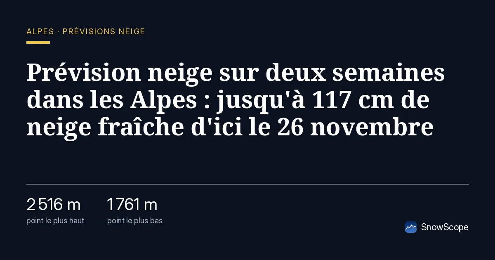

Saint François Longchamp : enneigement à 12 % de la normale
Saint François Longchamp n'accuse que 3 centimètres de neige sur ses pentes intermédiaires, soit seulement 12 % de l'enneigement habituel à la mi-novembre. L'automne a été exceptionnellement sec dans les Alpes, laissant de nombreuses stations dans l'attente. SnowScope prévoit un soulagement : environ 110 centimètres de neige fraîche devraient atteindre les Alpes au cours des deux prochaines semaines, les trois quarts environ tombant la première semaine.
Consultez les prévisions neige en temps réel pour Saint François Longchamp sur l'application SnowScopeHauteurs de neige, alertes poudreuse et carte 3D, gratuitement.
On part de loin
Un maigre enneigement recouvre à peine plus de la moitié des Alpes aujourd'hui. Saint François Longchamp n'est pas seule : seulement 592 des 1 179 stations de la région ont de la neige, et la surface totale enneigée s'élève à 40 280 kilomètres carrés. À basse altitude, le sol dénudé est courant. Ce déficit se produit quand octobre et début novembre restent trop doux et secs.
La situation change radicalement à partir du 13 novembre. Deux perturbations devraient se succéder rapidement. Le 15 novembre, la surface enneigée devrait atteindre 47 080 kilomètres carrés, un gain d'environ 7 000 kilomètres carrés en seulement trois jours.
| Station | Hauteur de neige | Neige fraîche, 72 h | Attendu, jours suivants | Sommet |
|---|---|---|---|---|
| Saint François Longchamp | 24 cm | 18 cm | 8 cm | 2 516 m |
| Paradiski | 58 cm | 28 cm | 5 cm | 3 205 m |
| Les Grands Montets | 50 cm | 42 cm | 5 cm | 2 768 m |
| La Clusaz | 5 cm | 3 cm | 5 cm | 2 476 m |
| Ovronnaz | 77 cm | 30 cm | 4 cm | 2 456 m |
| Arêches Beaufort | 19 cm | 5 cm | 8 cm | 2 319 m |

Calendrier des chutes de neige
Du 13 au 19 novembre, c'est la période qui compte. Le 18 novembre est le pic : Paradiski devrait recevoir 44 centimètres ce jour-là, Saint François Longchamp, Les Grands Montets et les stations voisines voyant 30 à 37 centimètres chacune. Le 19 novembre apporte une deuxième vague : encore 25 à 30 centimètres dans la plupart des stations. Ces deux jours valent vraiment la peine d'attendre.
Après le 19 novembre, les chutes de neige se réduisent à quelques flocons épars. La deuxième semaine (20 au 26 novembre) ne contribue que 7 à 14 centimètres répartis sur six jours. Le 20 novembre, le grand événement est terminé. Pour la plupart des skieurs, la valeur d'ouverture de la saison sera scellée le 19 novembre.

L'altitude gouverne l'enneigement
L'altitude est la variable clé. Le terrain au-dessus de 3 000 mètres devrait recevoir 62 centimètres en médiane, les exécutions hautes atteignant 82 centimètres. Entre 2 500 et 3 000 mètres, la prévision médiane est de 36 centimètres. La zone d'altitude moyenne de 2 000 à 2 500 mètres reçoit environ 32 centimètres.
Au-dessous de 2 000 mètres, les chutes de neige baissent fortement. Les pentes entre 1 500 et 2 000 mètres connaîtront environ 28 centimètres, et le terrain au-dessous de 1 500 mètres seulement 10 centimètres. Ce gradient est important car les crêtes hautes et les couloirs ombragés resteront skiales le plus longtemps tandis que les variations de température prévues en fin de deuxième semaine font fondre les pentes basses.

Sur quoi les deux prévisions s'accordent
Les deux prévisions diffèrent légèrement : certaines estimations tournent autour de 87 centimètres sur 14 jours, d'autres avoisinent 141 centimètres. Mais ces différences sont modestes pour une prévision à deux semaines, et les deux prévisions s'accordent à dire que la plupart des chutes se produisent du 13 au 19 novembre.
Une incertitude demeure : la limite pluie-neige aux altitudes intermédiaires. Si la masse d'air est plus chaude que prévu, le terrain autour de 1 500 à 1 800 mètres pourrait connaître de la pluie au lieu de la neige le 18 novembre, transformant la poudre potentielle en transitions grasses. Les prévisions se précisent à l'approche du système au cours des prochains jours.
Au-delà de la première semaine
Du 20 au 26 novembre, c'est une période creuse. La plupart des stations n'ajouteront que 7 à 14 centimètres. La Clusaz affiche 12 centimètres le 20 novembre, puis des gains épars de quelques centimètres les autres jours. C'est la semaine pour profiter de la neige du 19 novembre, pas pour s'attendre à de la poudre fraîche.
Les conditions s'amélioreront au cours de la semaine : la neige fraîche se tassera et se consolidera, créant des conditions de conduite stables. Des températures plus chaudes sont également prévues — un avantage mitigé — qui raffermiront et liseront la poudre la plus haute en milieu de semaine, mais risquent de transformer la neige fraîche d'altitude intermédiaire en maïs de printemps. La meilleure poudre sera la plus haute.
Ce que cela signifie pour la saison
Cet événement neigeux ne fait pas encore une saison solide à basse altitude, mais c'est une réinitialisation critique. Saint François Longchamp et les stations d'altitude intermédiaire similaires passeront de 3 centimètres à environ 90 à 110 centimètres sur leurs pentes intermédiaires, passant de quasi-skiable à une base convenable. Les stations plus hautes seront excellentes.
La question clé pour le reste de novembre et décembre est de savoir si d'autres systèmes arrivent. S'ils arrivent, les Alpes pourraient avoir un aspect normal fin novembre. Si ce n'est pas le cas, la saison pourrait rester maigre en décembre. Pour l'instant, l'accent est mis sur la capture de cette opportunité et son exploitation jusqu'en début décembre.
Conseils aux skieurs
- Visez la première semaine (13 au 19 novembre) pour obtenir toute la neige fraîche qui compte vraiment ; la deuxième semaine n'offre que 7 à 14 cm répartis sur six jours.
- Skiez à partir de 2 500 mètres si vous voulez la neige la plus profonde (36 à 68 centimètres sur deux semaines) et évitez l'air chaud qui ramollira les pentes d'altitude intermédiaire en deuxième semaine.
- Surveillez la limite de température à 1 500 à 1 800 mètres d'altitude : si l'air plus chaud arrive plus vite que prévu, la neige pourrait se transformer en gadoue le 18 novembre.
- Consultez le bulletin officiel d'avalanche si vous prévoyez de skier hors piste ; 30 à 40 centimètres de neige fraîche chargeant les pentes sur deux jours augmente le risque déclenché par le skieur.
- N'oubliez pas que la neige en début de saison à basse altitude peut être fine et par plaques ; les rochers et la terre peuvent encore apparaître même après 100 centimètres ou plus de neige fraîche d'altitude intermédiaire.
À propos de ces chiffres
Les hauteurs de neige des stations sont la neige la plus épaisse sur le haut du domaine à la date indiquée ; ce sont des estimations pour une zone, pas une mesure en un point. Les prévisions peuvent changer. Consultez toujours le bulletin d'avalanche officiel avant le hors-piste.
Bulletins d'avalanche officiels: EAWS (Alps)
Citer ce bulletin
Pour la recherche, l'enseignement ou la presse : chiffres et graphiques réutilisables librement sous CC BY 4.0 avec cette citation.
SnowScope (2026), Saint François Longchamp : enneigement à 12 % de la normale, https://snowscope.app/blog/fr/2026/11/alps-2-week-snow-forecast-maps-12-november-2026.html, consulté le 2026-11-12
SnowScope (Atlas Labs). (2026, November 12). Saint François Longchamp : enneigement à 12 % de la normale. SnowScope snow reports. https://snowscope.app/blog/fr/2026/11/alps-2-week-snow-forecast-maps-12-november-2026.html
BibTeX
@misc{snowscope2026alps2weeksnowforecastmap,
author = {{SnowScope (Atlas Labs)}},
title = {Saint François Longchamp : enneigement à 12 % de la normale},
year = {2026},
month = nov,
howpublished = {\url{https://snowscope.app/blog/fr/2026/11/alps-2-week-snow-forecast-maps-12-november-2026.html}},
note = {Published 2026-11-12 18:20 UTC; accessed 2026-11-12}
}· CC BY 4.0 · Méthodes, données et outils →
Suivre Saint François Longchamp
Gratuit : un message quand la neige arrive, et la météo chaque matin.
Autres bulletins neige

Les Grands Montets ont enregistré 74 cm de neige fraîche ces dernières 72 heures, avec d'autres chutes prévues pour les jours à venir au 17 novembre 2026.

Une carte des pentes des Grands Montets et de sept autres domaines skiables montre quelle part du terrain dépasse 30°, 35° et 40°, et pourquoi ce seuil compte pour les avalanches.

Verbier est-il fait pour les débutants ? Quand la neige est-elle la meilleure ? Comment y aller ? Réponses sur les 4 Vallées et 46 hivers passés.